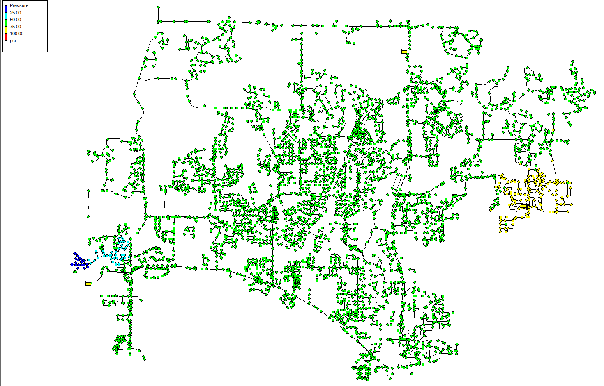
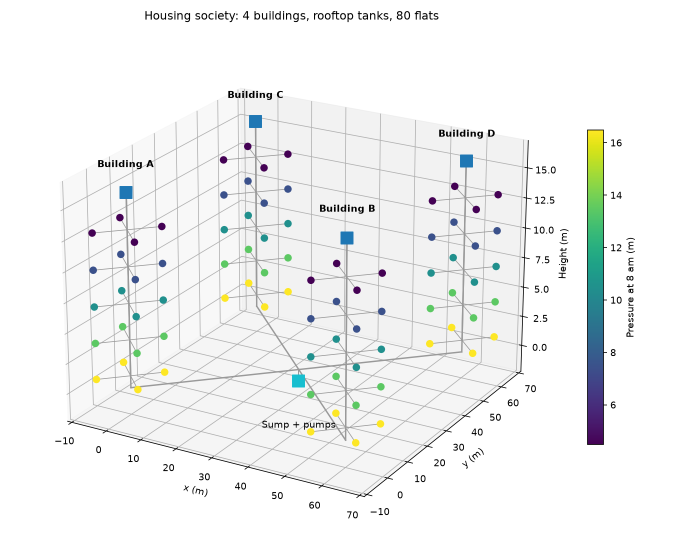
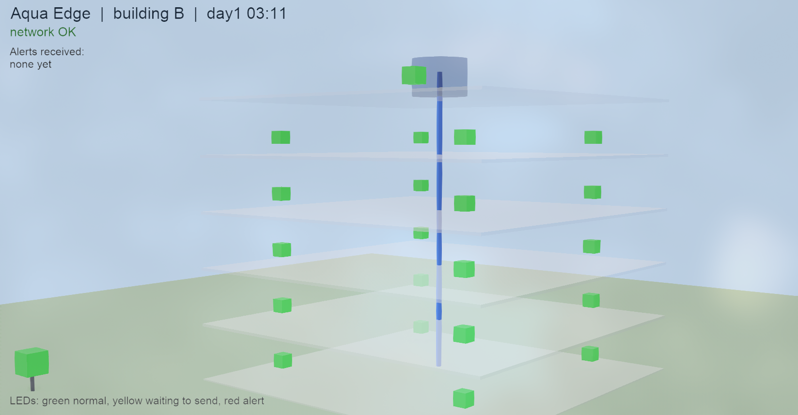
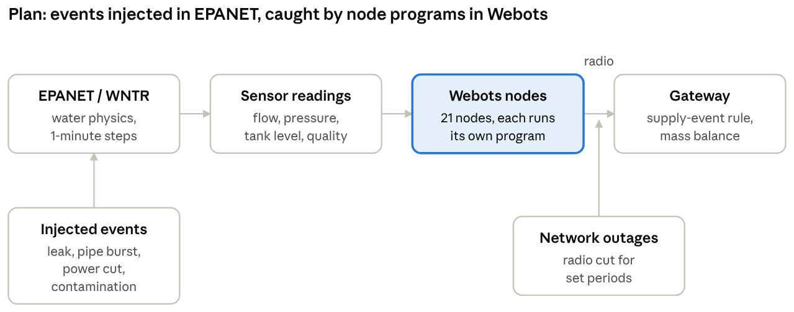

This report covers only the simulation part of Aqua Edge; the other parts of the project are reported separately by teammates. Simulation lets us create leaks, supply problems and contamination on purpose and see how a design reacts, which is not possible on a real building. Water behaviour is simulated in EPANET through WNTR (its Python library), the approach used by Pagano et al. [5] (EPANET and NS-3 co-simulation of a water network).
We reproduced the published SWI-FEED dataset of Pagano et al. [5] (EPANET and NS-3 co-simulation of a water network) exactly. Their NET_6 network (4,419 junctions, 5,066 pipes, 3 reservoirs) was run for 24 hours in WNTR and compared value by value with their published CSV files. This confirms our toolchain matches the reference paper, so later results rest on a trusted baseline.
| Solver | Values compared | Largest difference |
|---|---|---|
| EPANET solver | 105,816 pressures, 121,200 flows | 0.37 m pressure |
| WNTR solver | 105,816 pressures, 121,200 flows | 0.000001 (CSV rounding only) |
On NET_6, neither leak rule from our references catches small leaks, and the two rules catch different large ones. We added leaks of 4 sizes at 8 random junctions and tested the pressure-drop rule of Alghamdi et al. [2] (pressure-drop leak rule and smart valve closure over LoRaWAN) and the supply-versus-branch mass balance of Ali et al. [6] (mass balance of supply vs branch flows for leaks, plus quality sensing), with realistic sensor errors.
| Leak flow | Pressure-drop rule | Mass balance |
|---|---|---|
| 0.2 L/s | 1 of 8 (sensor noise, not the leak) | 0 of 8 |
| 1.1 L/s | 0 of 8 | 0 of 8 |
| 4.3 L/s | 4 of 8 (1 a real drop) | 2 of 8 |
| 10.5 L/s | 3 of 8 (2 real drops) | 5 of 8 |
The network is very stiff: even 65 to 77 L/s bursts near the pumps moved pressure by less than 5 psi. Only large bursts far from the main source create a visible low-pressure zone (Figure 1). The mass balance raised no false alarms but needs a leak of about 10% of a zone's inflow.


Inside a building, a leak shows up in flow, not in pressure. Because a whole town is too coarse for one Aqua Edge node, we built our own housing-society network in EPANET: 4 buildings, ground plus 4 floors, 4 flats per floor (80 flats). Water goes from an underground sump, through one pump per building, to a rooftop tank, then down by gravity. Use is 540 L per flat per day (4 people at 135 L, the CPHEEO guideline) with morning and evening peaks.
Height is modelled through each junction's elevation, so pressure falls about 3 m per floor: 16.5 m on the ground floor and 4.5 m on the top floor at the morning peak (Figure 2). A 180 L/hour leak in one flat raised its building's night use (1 to 4 am) from 0.015 to 0.067 L/s, more than 4 times normal, but lowered that flat's pressure by only 0.22 m.

We installed Webots R2025a and built a first 3D model of one building to see whether it suits our node-level work. The model holds 20 flat nodes at their real floor heights, a tank node on the roof and a gateway on the ground (Figure 3). Each node is a Webots robot with a radio emitter and receiver, a status light, and its own Python program. Webots cannot simulate water flow, so it will not replace EPANET. Its value for us is running each node's own program in a 3D scene, with a radio link we can switch off to imitate an outage.
The next step joins the two tools: EPANET produces the water behaviour and Webots runs the node programs (Figure 4).
